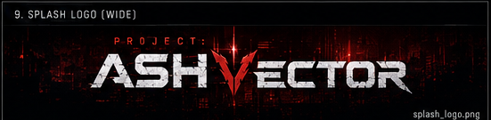

ASH VECTOR DATABASE // CLEARANCE: CIVILIAN

PROJECT:
ASH VECTOR
Reality integrity compromised. Operator access required.
Press Enter or click Initialize Operator to start.
Select a database protocol.
AVOS UI KIT v0.5.3 // Chapter 1 Playtest Sprint online